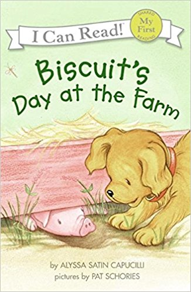
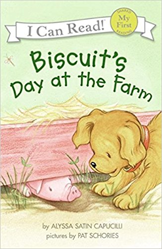

Biscuit's Day at the Farm
Biscuit is a cute little puppy that is asked to assist at the farm. While helping with the chores, he finds a friend. While running from Mr. Goose, will Biscuit help his friend find his way back to his family?

Biscuit is a cute little puppy that is asked to assist at the farm. While helping with the chores, he finds a friend. While running from Mr. Goose, will Biscuit help his friend find his way back to his family?
